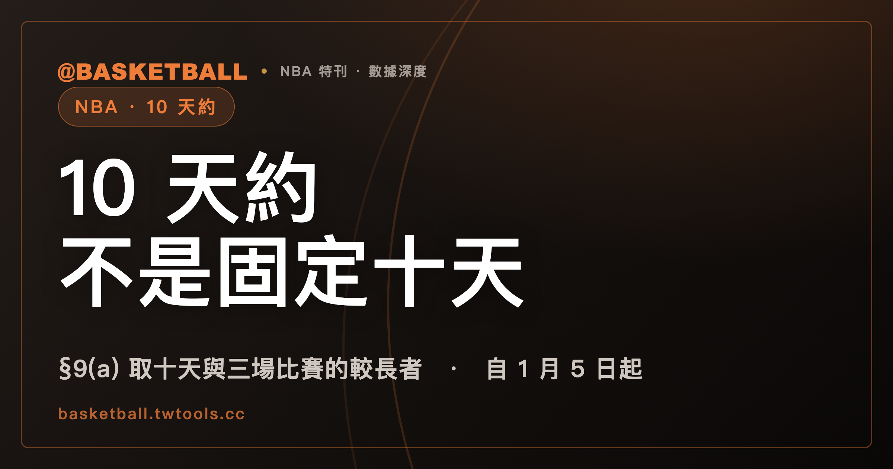

10 天約不是固定十天：2023 CBA §9(a) 取十天與涵蓋三場比賽的期間，兩者中較長者
依 2023 CBA Article II §9(a)，自任一 NBA Season 的 1 月 5 日起，球隊可與球員簽非 Two-Way 的 10-Day Contract，期限是「十天」與「涵蓋該隊三場比賽的期間」兩者中較長者。同一球隊對同一球員在一個 Season 內不得簽超過兩次，球隊同一時間能持有幾份，則另有一張依名冊人數對照的表。

新手村｜制度入門・10 天約
新聞寫「某隊簽下某球員一紙 10 天約」，接著會有這些問題：這張約到底有多長、能簽幾次、一支球隊可以同時放幾個人在這種約上、之後能不能變成長約。
本文依據的是 2023 年 NBA 集體談判協議（下稱 2023 CBA）Article II 第 9 節與第 10 節，內容取自本機保存的全文文字檔，取得日 2026 年 9 月 30 日。CBA 會隨協議修訂而改變，之後以官方最新版為準。NBA 2025-26 規則書、FIBA 2024 版（2026 版規則書於 2026 年 10 月 1 日生效）與統計詞彙表（2026 年 9 月 25 日快照）裡，本題的詞條都查無 10-Day，因此本文不引用它們。
「10 天約」是中文慣稱，CBA 的用語是 10-Day Contract。本文的判斷是：在 §9(a) 之下，這張約的期限不是固定十天，而是「十天」與「涵蓋該隊三場比賽的期間」兩者中較長者；同一球隊對同一球員一季的次數上限，與球隊一次能持有幾份的名額上限，是兩道各自成立的限制。特定球隊與球員的實際簽約，本文不涵蓋。
先把整篇的結構放在一張表裡：
| 問題 | 2023 CBA 條文的內容 | 條號 |
|---|---|---|
| 什麼時候起能簽 | 自任一 NBA Season 的 1 月 5 日起，Two-Way Contract 除外；hardship 授權簽約另適用 §9(e) | §9(a)、§9(e) |
| 期限多長 | 十天與涵蓋該隊三場比賽的期間，兩者中較長者 | §9(a) |
| 同一人能簽幾次 | 同一球隊對同一球員，一個 Season 內不得超過兩次 | §9(c) |
| 球隊能同時持有幾份 | 依 Active List 加 Inactive List 的總人數（含簽 10-Day 者、不含 Two-Way 球員）對照：12 人 0 份、13 人 1 份、14 人 2 份、15 人 3 份 | §9(c) |
| 簽約有沒有截止 | 算出的長度延伸到或超過該隊該季最後一場例行賽日，就不得簽（hardship 授權簽約另適用 §9(e)） | §9(d)、§9(e) |
| 怎麼結束 | 書面通知終止，不走 waiver 程序 | §9(f) |
讀完之後，你可以拿一個標明「假設」的名冊人數與日期，自己判斷球隊能不能再簽一份 10 天約。
2023 CBA §9(a)：球隊自 1 月 5 日起可簽 10 天約，Two-Way Contract 除外
§9(a) 的第一個條件是時間。條文寫的是「自任一 NBA Season 的 1 月 5 日起」（Beginning on January 5 of any NBA Season），球隊可與球員簽 Player Contract，期限依同款後面的算法決定，這種合約稱為 10-Day Contract。
第二個條件寫在括號裡：Two-Way Contract 除外。這個括號把雙向合約排在 §9(a) 的 10-Day Contract 之外。雙向合約自己的名額、出賽場數與轉正規則，可以看本站的NBA 雙向合約怎麼運作，該文逐項列出雙向合約的名額與出賽場數規則。
§9(a) 沒有寫如何調整「1 月 5 日」這個日期，本文也不補任何調整方式。另一款 §9(e) 給 NBA 依 hardship 規則授權簽約的情形，開頭就寫「儘管有 §9(a) 或 §9(d) 的任何規定」（Notwithstanding anything to the contrary in Section 9(a) or 9(d)），這一款留到後面單獨說。
薪資也在同一條裡：§9(b) 規定 10-Day Contract 的 Salary 是 Minimum Player Salary。本文不談金額。
期限是十天與涵蓋三場比賽的期間中，較長的一個
§9(a) 對期限的寫法是「(i) 十天，或 (ii) 涵蓋該隊所打三場比賽的期間，取較長者」（the longer of (i) ten (10) days, or (ii) a period encompassing three (3) games played by such Team）。
這條的關鍵是「較長者」。兩個數字各自算一次，再取大的那一個。下面是本文對這個結構的讀法，不是條文另外寫出的公式：
- 賽程很密，十天內就打了三場以上，涵蓋三場比賽的期間比十天短，較長者是十天。
- 賽程稀疏，十天內打不滿三場，要把第三場也包進來，期間比十天長，較長者就是涵蓋三場的期間。
所以「10 天約」的「10 天」是期限的下限，不是固定長度。這裡要留意兩件事。第一，（ii）寫的是該隊（such Team）所打的三場比賽。第二，「涵蓋三場的期間」日數怎麼起算，本文引用的段落沒有再細分，日數細節以 CBA 原文為準。
同一球隊對同一球員一個 Season 內不得簽超過兩次
§9(c) 的第一句管的是次數：任何球隊在任一個 Season 內，對同一名球員簽 10-Day Contract 不得超過兩次（No Team may enter into a 10-Day Contract with the same player more than twice during the course of any one Season）。
這句話的適用條件有三個：同一球隊、同一球員、同一個 Season。三個條件缺一個，就是另一個問題。例如同一球員在同一個 Season 內與不同球隊簽約，總共可以簽幾份，這一款沒有寫；本文引用的 §9 沒有出現這種跨球隊的次數限制，本文也就不講。
「連簽兩次」與「第二紙 10 天約」是中文慣稱，CBA 只寫 more than twice。
球隊同一時間能持有幾份，看的是名冊人數對照表
§9(c) 的第二句是另一道限制，管的是名額：任何球隊在任何一個時間點，所屬的 10-Day Contract 份數不得超過下表（No Team may be a party at any one time to more 10-Day Contracts than the following）。
條文的表頭是 Active List 與 Inactive List 的總人數（Aggregate Number of Players on Team's Active List and Inactive List），中文可以稱為名冊人數。這個總人數把簽 10-Day 的球員算進去，Two-Way 球員不算。表格的數值如下：
| 名冊人數（Active List 加 Inactive List） | 可持有的 10-Day Contract 份數 |
|---|---|
| 12 | 0 |
| 13 | 1 |
| 14 | 2 |
| 15 | 3 |
同一款有一個範例可以直接對照：球隊 Active List 上有 13 名球員（不含 Two-Way），Inactive List 上沒有人，這隊可以有一名球員持 10-Day Contract。這一列對到上表 13 對 1。
前一節的次數與這一節的名額，是同一款裡的兩句，各自成立。次數看的是「同一球員」在一個 Season 內的累計，名額看的是「球隊」在某個時間點手上有幾份。兩件事並列時，不要把它們當成同一道門檻的兩個說法。
算出的合約長度延伸到最後一場例行賽日，球隊就不得簽
§9(d) 給簽約設了一個尾端的限制：如果依 §9(a) 算出的合約長度，會延伸到或超過該隊該季最後一場例行賽的日期，球隊不得簽 10-Day Contract（would extend to or past the date of the Team's last Regular Season game for such Season）。
這條的長度指的是依 §9(a) 算出的那個「較長者」。前面說期限取十天與三場涵蓋期間兩者中較長者，這一款拿那個較長者去對最後一場例行賽日，決定能不能簽。照這條文的結構看，簽約日離該隊最後一場例行賽日越近，算出來的長度越接近這條線。
hardship 授權簽約是另一款，期限改為剩餘天數
§9(e) 是 §9(a) 與 §9(d) 之外的另一款。它的第 (i) 項寫：NBA 依 hardship 規則（the NBA's hardship rules）授權球隊簽 Player Contract 時，該約是 10-Day Contract，不論賽季何時簽。
它的第 (ii) 項處理尾端：hardship 授權簽約，而且依 §9(a) 算出的長度會延伸到或超過最後一場例行賽日時，這份 10-Day Contract 的期限是該例行賽剩餘的天數，含簽約當天（the number of days remaining in such Regular Season (including the day on which the 10-Day Contract is signed)）。
這裡要限定範圍：CBA 這一款只寫「依 NBA 的 hardship 規則」，hardship 規則本身，也就是 NBA 何時授權、資格如何，不在本文引用的 CBA 內容裡。本文因此只說 §9(e) 條文有寫的兩件事，不談資格條件。
10 天約以書面通知終止，被球隊終止後在原期限內不得再簽新約
§9(f) 寫終止方式：10-Day Contract 只要以書面通知球員即可終止，不必走 Uniform Player Contract 第 16 段的 waiver 程序（and not by following the waiver procedure set forth in Paragraph 16 of the Uniform Player Contract），並且只需付該合約 Exhibit 1A 所列的金額。
§9(g) 接著處理被終止之後：球員的 10-Day Contract 若被球隊在載明期限屆滿前終止，這支球隊與該球員在「被終止的那份 10-Day Contract 載明期限屆滿前」，不得簽新的 Contract。
這一款的適用條件是「被球隊終止」，而且時間是「載明期限屆滿前」。期限屆滿之後的限制，條文沒有寫在這一款裡。
10 天約屆滿前，雙方可以談 Rest-of-Season Contract
§9(h) 給了 10-Day Contract 之後的一條路：雙方可以在 10-Day Contract 屆滿（若適用，包括終止）之前，談並簽一份屬於 Rest-of-Season 的 Standard NBA Contract，這份新合約在原 10-Day 載明期限屆滿日的次日生效。
Rest-of-Season Contract 由 §10(a) 定義：自 NBA Regular Season 第一天之後的任何時間，球隊可以簽提供球員該季剩餘期間 Compensation 的 Player Contract，稱為 Rest-of-Season Contract。中文新聞常寫「轉正」或「轉正式約」，這是慣稱，CBA 寫的是 Standard NBA Contract that is a Rest-of-Season。
10-Day Contract 在別處也會出現。本站談 Restricted Free Agent 的受限自由球員入門，在說明 Veteran Free Agent 定義時有一句「10-Day Contract 不算」；那是另一個問題，本文不展開。
拿四個標明「假設」的情境，自己判一次
下面四個情境的球隊、名冊人數與日期都是假設，不是真實案例。每一步都對到前面的條文。
情境一：期限。假設甲隊在簽約日之後，十天內排了 4 場比賽。依 §9(a)，兩個數字各算一次：（i）十天；（ii）涵蓋三場比賽的期間。這 4 場都排在十天之內，涵蓋前三場的期間比十天短，較長者是十天。
再假設乙隊在簽約後十天內只排了 2 場，第三場排在簽約後第 12 天。涵蓋三場比賽的期間至少要延伸到第 12 天，比十天長，較長者是涵蓋三場比賽的期間。這是本文對 §9(a) 結構的讀法，日數起算的細節以 CBA 原文為準。
情境二：名額。假設丙隊 Active List 加 Inactive List 合計 14 人（不含 Two-Way 球員），目前已持有 1 份 10-Day Contract。對照 §9(c) 的表，14 人對 2，上限是 2 份，已持有 1 份，所以還可以再持有 1 份（2 減 1 等於 1）。
如果同一支球隊合計 12 人，表上是 0，一份 10-Day Contract 都不能持有；合計 13 人，表上是 1。
情境三：次數與名額各自檢查。假設丁隊已經在同一個 Season 內，對某球員簽過兩次 10-Day Contract。即使名冊人數對照表上還有空位，§9(c) 第一句仍然是同一球隊對同一球員不得超過兩次，所以丁隊該季不得對這名球員簽第三次。
情境四：最後一場例行賽。假設戊隊是一般簽約（不是 hardship 授權），簽約日起算，到該隊該季最後一場例行賽的日期只剩 3 天。依 §9(a) 算出的合約長度至少是十天，超過那個日期，依 §9(d)，這一份不得簽。
判斷順序可以整理成四個問題：這是不是 1 月 5 日起、非 Two-Way 的簽約；算出的長度是十天與三場涵蓋期間的哪一個；這個球員與該隊這季是否已經簽過兩次；球隊此刻的名冊人數對照表上還有沒有空位。四個問題都過關，再看 §9(d) 的最後一場例行賽日。
常見問題
10 天約的期限就是十天嗎？
不是固定十天。依 2023 CBA Article II §9(a)，自任一 NBA Season 的 1 月 5 日起簽的非 Two-Way 10-Day Contract，期限是「十天」與「涵蓋該隊三場比賽的期間」兩者中較長者。簽約球隊十天內打不滿三場時，涵蓋三場比賽的期間比十天長，較長者就是它。若簽約是依 NBA 的 hardship 規則授權，§9(e) 是另一款；依 §9(a) 算出的長度延伸到或超過最後一場例行賽日時，期限改為該例行賽剩餘天數，含簽約當天。
一支球隊可以同時持有幾份 10 天約？
依 2023 CBA Article II §9(c) 的對照表，看球隊 Active List 加 Inactive List 的總人數，Two-Way 球員不算：12 人是 0 份、13 人是 1 份、14 人是 2 份、15 人是 3 份。這是球隊某個時間點手上份數的上限，與同一球員的簽約次數是同一款裡各自成立的兩道限制。
同一名球員一個賽季可以簽幾次 10 天約？
依 2023 CBA Article II §9(c) 第一句，同一球隊對同一球員，在一個 Season 內簽 10-Day Contract 不得超過兩次。這一句的條件是同一球隊、同一球員、同一 Season；同一球員在同一 Season 內與不同球隊簽約的總次數，本文引用的條文沒有寫，本文不涵蓋。
10 天約被球隊終止後，可以馬上再簽新約嗎？
依 2023 CBA Article II §9(g)，球員的 10-Day Contract 若被球隊在載明期限屆滿前終止，該球隊與該球員在被終止的那份合約載明期限屆滿前，不得簽新的 Contract。終止方式依 §9(f)，是書面通知，不走 waiver 程序。10-Day Contract 屆滿（若適用，包括終止）之前，雙方另可依 §9(h) 談 Rest-of-Season Contract，新合約於原載明期限屆滿日的次日生效。
資料來源
- 2023 NBA Collective Bargaining Agreement：2023 NBA CBA（官方 PDF）。用到 Article II §9(a) 至 §9(h)、§10(a)。本文對照的是本機保存的全文文字檔，取得日 2026 年 9 月 30 日。
- 「10 天約」「轉正」「名冊人數」「連簽兩次」為中文慣稱，非 CBA 用語；規則以 CBA 英文原文為準。